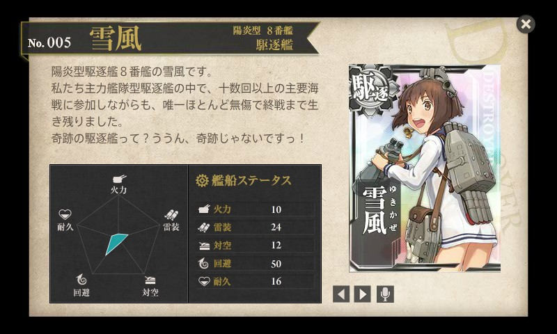

『雪風ハ沈マズ』
公開日：
")
- 作者: 豊田穣
- 出版社/メーカー: 光人社
- 発売日: 2004/10/01
- メディア: 文庫
- クリック: 2回
- この商品を含むブログ (9件) を見る
第一線で酷使されながら、太平洋戦争を生き延びた奇跡の駆逐艦のお話。ちなみに終戦時の駆逐艦の残存は39（開戦時保有111、戦中竣工63、喪失135、損耗率77.6%、残存艦のうち9隻は稼働不能）で、多くは戦前からある老朽艦か戦争末期に量産された“雑木林”シリーズ。新鋭艦として常に最前線にありながら、終戦までほぼ無傷で生き延びた艦は「雪風」ぐらいなものだ。
その代わりといってはなんだが、多くの艦の死に水も取った。主だった艦を上げるだけでも以下の通り。
- 「比叡」：退艦をしぶる西田艦長を強制収容、一時退避。戻った時に「比叡」の姿はすでになかった（艦これ: 戦艦・比叡のお墓に行ってきたった。 - だるろぐ）
- 「時津風」「荒潮」：ダンピールの悲劇を生き延び（『キスカ島 奇跡の撤退: 木村昌福中将の生涯』 - だるろぐ）、乗員を救助
- 「金剛」：沈没の際に周辺警戒。「浜風」と「磯風」が乗員を救助
- 「信濃」：生まれたばかりの“大和型”航空母艦の護衛するも潜水艦の雷撃で喪失、乗員を救助
- 「大和」：沖縄特攻の護衛で、生存者を救助。傷ついた歴戦の僚艦「磯風」の曳航を試みるも、果たせず砲撃処分
長年在籍した“華の二水戦”の解体は、佐世保で聞くことになる。
全体的に記述があっさりしてて、あんまり読ませる文章ではない気がするけれど、戦記モノっていうのはだいたいこういうものなのかな。けれど、終戦を迎えて舞鶴で武装を解除し、船腹に書かれた“ユキカゼ”が“YUKIKAZE”になったときはさすがにちょっとウルッときてしまった。

開戦時の艦長・飛田中佐の口癖であったという「うんにょー！」は“艦これ”でも「雪風」の口癖として採用してほしかったｗ あと、駆逐艦って原油でも走るんだね？ 文系だし、そういうとこ全然わかんないし、知らなかった。
「雪風」の後日譚
本書では触れられていない「雪風」のちょっとしたお話。
- 武装解除後は復員船として1万3千人以上の日本人を内地へ送り返す。その中には『ゲゲゲの鬼太郎』で有名な水木しげる氏の姿も。
- 復員後は中華民国へ賠償艦として引き渡される（「丹陽」）。強運伝説にあやかってか海軍旗艦に。中国共産党との戦いを生き延びる（これまたいろいろ幸運なエピソードがあるらしい）。
- 戦後初の国産護衛艦「はるかぜ」型2番艦につけられた名前が「ゆきかぜ」。諸事情でネームシップにすることはできなかったのだろうけれど、この船の名前を「ゆきかぜ」にしたかった気持ち、よくわかる。